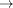
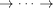

Manipulating digraphs with Vertex labels
Contents
Many directed graph, or digraph, applications drop the vertex labels to focus on computations of the Adjacency Matrix, referring to the vertices only by their indices. The digraph class attempts to provide a convenient interface for those that require to know what the vertex actually represents.
This is a quick introduction to how to get started using digraph, but executing
help digraph
will provide links to read about more in-depth functionality, while
methods digraph
lists all valid functions that can be used with the digraph.
Construct a new digraph
Start by creating a blank digraph object:
dg = digraph
dg =
digraph with properties:
AdjMat: []
Vertex: {}
NumVertices: 0
NumEdges: 0
Vertices
Add vertex labels to the digraph. The labels must be strings.
addVertex(dg,'A') addVertex(dg,'B') addVertex(dg,'C') addVertex(dg,'D') addVertex(dg,'E') addVertex(dg,'F') addVertex(dg,'G') addVertex(dg,'H') addVertex(dg,'I') addVertex(dg,'J') addVertex(dg,'K')
Edges
To represent an edge from A onto B, the syntax is predictably
addEdge(dg,'A','B')
Add others one at a time:
addEdge(dg,'B','I') addEdge(dg,'C','D') addEdge(dg,'D','I') addEdge(dg,'I','E') addEdge(dg,'E','F') addEdge(dg,'I','F') addEdge(dg,'I','G') addEdge(dg,'G','H') addEdge(dg,'F','K')
Now our digraph is something substantial:
dg
dg =
digraph with properties:
AdjMat: [11x11 double]
Vertex: {'A' 'B' 'C' 'D' 'E' 'F' 'G' 'H' 'I' 'J' 'K'}
NumVertices: 11
NumEdges: 10
Adjacency Matrix
The Adjacency Matrix, shortened to AdjMat, is a matrix representation of the edges. AdjMat(i, j) is true if and only if there is an edge from vertex i to vertex j.
Thus the following are equivalent, either using the succinct hasEdge function:
hasEdge(dg,'A','B')
ans =
1
Or by using Vertex indices to access the AdjMat directly:
[foundA,i] = hasVertex(dg,'A'); [foundB,j] = hasVertex(dg,'B'); if foundA && foundB % make sure they were each found edge = dg.AdjMat(i,j) end
edge = (1,1) 1
See assertVertex for a stricter version of hasVertex and removeVertex to learn more about accessing indices directly. Using the indices is a more advanced maneuver, to be used only when it is more convenient. The beauty of the digraph implementation is that you don't (and shouldn't!) have to track the corresponding index.
As gleened from the output above, the AdjMat is stored as a sparse matrix, whose display can be hard to read:
dg.AdjMat
ans = (1,2) 1 (3,4) 1 (9,5) 1 (5,6) 1 (9,6) 1 (9,7) 1 (7,8) 1 (2,9) 1 (4,9) 1 (6,11) 1
View it as a full matrix by using full. This is not advised for large matrices for the sake of memory.
full(dg.AdjMat)
ans =
0 1 0 0 0 0 0 0 0 0 0
0 0 0 0 0 0 0 0 1 0 0
0 0 0 1 0 0 0 0 0 0 0
0 0 0 0 0 0 0 0 1 0 0
0 0 0 0 0 1 0 0 0 0 0
0 0 0 0 0 0 0 0 0 0 1
0 0 0 0 0 0 0 1 0 0 0
0 0 0 0 0 0 0 0 0 0 0
0 0 0 0 1 1 1 0 0 0 0
0 0 0 0 0 0 0 0 0 0 0
0 0 0 0 0 0 0 0 0 0 0
Subgraphs
Create subgraphs of your digraph by specifying the vertices. This will return a new digraph:
subgraph(dg,{'C','D','G','H'})
ans =
digraph with properties:
AdjMat: [4x4 double]
Vertex: {'C' 'D' 'G' 'H'}
NumVertices: 4
NumEdges: 2
Finding Edges
Find all vertices that I directly (explicitly) points to:
findall(dg,'I',1)
ans =
'E' 'F' 'G'
and those that directly point to I:
findall(dg,'I',-1)
ans =
'B' 'D'
Find all vertices that I directly or indirectly (implicitly) points to:
findall(dg,'I',Inf)
ans =
'E' 'F' 'G' 'H' 'K'
and those that directly or indirectly point to I:
findall(dg,'I',-Inf)
ans =
'A' 'B' 'C' 'D'
Find all vertices that are at most 3 edges "ahead" of A:
findall(dg,'A',3)
ans =
'B' 'E' 'F' 'G' 'I'
findall will always return a sorted cell array.
Finding Paths
See if two vertices are linked by an edge directly:
hasEdge(dg,'A','K')
ans =
0
or indirectly.
hasPath(dg,'A','K')
ans =
1
Find the shortest path from one to the other. This implements Dijkstra's algorithm.
shortestPath(dg,'A','K')
ans =
'A' 'B' 'I' 'F' 'K'
P = shortestPath(DG,SOURCE,TARGET) will return a sequential cell array P. If hasPath from SOURCE to TARGET returns false, then P will be empty, otherwise P will have a sequence of vertex names such that
SOURCE = P{1}  P{2}  P{end} = TARGET.
If SOURCE and TARGET are the same, hasPath will always return true and shortestPath will have exactly one element.
Union, Intersect, and Copy
Combine and copy entire digraphs:
c = copy(dg)
c =
digraph with properties:
AdjMat: [11x11 double]
Vertex: {'A' 'B' 'C' 'D' 'E' 'F' 'G' 'H' 'I' 'J' 'K'}
NumVertices: 11
NumEdges: 10
This makes a "deep" copy, such that dg and c are completely independent:
addVertex(c,'foo') hasVertex(c,'foo') % c should contain "foo" hasVertex(dg,'foo') % dg should NOT contain "foo"
ans =
1
ans =
0
Taking the union of dg and c will use the union of the vertices and the edges available in either digraph:
union(dg,c)
ans =
digraph with properties:
AdjMat: [12x12 double]
Vertex: {1x12 cell}
NumVertices: 12
NumEdges: 10
Taking the intersect of dg and c will use the intersect of the vertices and the edges between them that are found in both digraphs:
intersect(dg,c)
ans =
digraph with properties:
AdjMat: [11x11 double]
Vertex: {'A' 'B' 'C' 'D' 'E' 'F' 'G' 'H' 'I' 'J' 'K'}
NumVertices: 11
NumEdges: 10
Transitive Closure
The transitive closure of a digraph makes all implicit edges explicit. In other words, if you have that A B C, then C is in A's transitive closure. The transitiveClosure function will create a new digraph with an additional edge from A onto C.
Here, notice how NumEdges grows to 35:
tc = transitiveClosure(dg)
tc =
digraph with properties:
AdjMat: [11x11 double]
Vertex: {'A' 'B' 'C' 'D' 'E' 'F' 'G' 'H' 'I' 'J' 'K'}
NumVertices: 11
NumEdges: 35
The original digraph will be a subset of its transitive closure:
isEquivalent(tc, union(dg,tc))
ans =
1
isEquivalent(dg, intersect(dg,tc))
ans =
1
Minimal Edges
This is in a sense the converse of transitiveClosure. If you have that A B C and A C, then the edge from A onto C is redundant since there is already an indirect edge through B. The minimalEdges function will create a new digraph that has the edge from A onto C removed.
Here, notice how NumEdges shrinks to 9:
me = minimalEdges(dg)
me =
digraph with properties:
AdjMat: [11x11 double]
Vertex: {'A' 'B' 'C' 'D' 'E' 'F' 'G' 'H' 'I' 'J' 'K'}
NumVertices: 11
NumEdges: 9
This will (conversely to the transitive closure) be a subset of the original:
isEquivalent(dg, union(dg,me))
ans =
1
isEquivalent(me, intersect(dg,me))
ans =
1